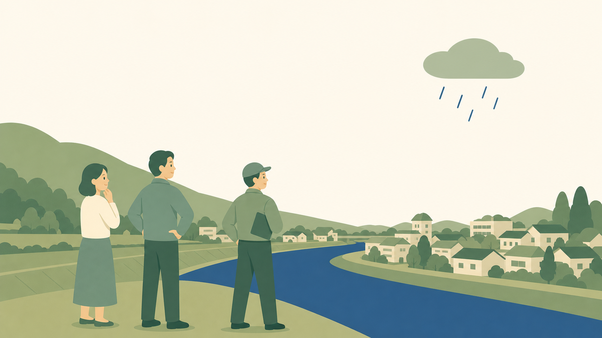

助けは、すぐ来ない？
小4社会「自然災害から人々を守る活動（自然災害にそなえるまちづくり）」の授業を、全国の指導事例と国の資料から考えます。これは"正解の指導案"ではありません。「こう考えたら面白いかも」を集めた、授業づくりのヒント集です。

ここに並べた導入や手立ては、全国の先生・研究会・教育委員会、そして文部科学省・国土交通省・消防庁などの資料から学んだものです。参考にした資料には、本文中と末尾に必ず出典と元サイトへのリンクを付けました。指導案の文章をそのまま写すことはしていません（要約と、私自身の言葉で書いています）。児童・学校の内部情報は含みません。敬意を込めて、リンクから原典にあたっていただけたら嬉しいです。
4年生の「自然災害から人々を守る活動」。困るのは、災害が子どもにとって「昔の話」か「よその話」になりやすいことです。教科書の写真は遠く、自分の身には起きない気がしている。だからこの単元のいちばんの仕事は、災害を「自分のまち・自分の明日」に引き寄せること。そして、守ってくれるのは公（県や市）だけではない——自分（自助）・地域（共助）・公（公助）のつながりで、まちは災害にそなえていることに気づかせることです。
この記事は、文部科学省の指導事例や国土交通省・消防庁の資料、全国の授業アイデアをもとに、「面白い導入」と「自分ごとにする手立て」を並べたものです。どれが正解、という話ではありません。気になったものをつまんでもらえたらと思います。
01この単元の勘どころ
この単元は、地震・水害・風水害・雪害・火山など、その地域で実際に起こりうる災害を選んで扱います。ポイントは2つ。1つは「自分ごと化」。自分の市のハザードマップや過去の災害を扱い、「明日、自分の家は？」に落とす。もう1つが公助・共助・自助の3つの視点。県や市の取組（公助）、地域の取組（共助）、家庭の取組（自助）がつながってまちを守っていることを、関係図でつかませます。
02面白い導入くらべ
導入のねらいは、「これは自分のまちの話だ」と思わせることと、「助けはすぐ来る」という思い込みをゆさぶることです。先行事例を型別に並べました。◎は個人的に「これは効く」と感じたものです。
タイプ1｜自分のまちに引き寄せる
| おすすめ | 導入ネタ | 面白さのツボ | 出典 |
|---|---|---|---|
| ◎ | 自分の市のハザードマップ | 自分の学校・家がどの色（浸水・土砂）にあるかを見る。「昔・よそ」が一気に「自分の明日」になる。市の防災マップは公表されている。 | 国交省 学習教材／各市防災マップ |
| ○ | 地元で実際に起きた災害 | 校区や市で過去に起きた水害・地震の写真や年表。「このまちでも起きた」の実感。 | 各自治体資料 |
タイプ2｜「助けはすぐ来る」をゆさぶる
| おすすめ | 導入ネタ | 面白さのツボ | 出典 |
|---|---|---|---|
| ◎ | 「助けは、何日来ない？」 | 大きな災害では、消防や自衛隊（公助）がすぐ全員を助けるのは難しい。「助けが来るまで、だれが自分を守る？」→自助・共助の必要感が生まれる。 | 消防庁 自助・共助・公助 |
| ○ | 「今、地震が来たら？」 | 教室で今すぐ何ができるか。備えのなさに気づく。防災の"自分ごと"の入口。 | 各防災教育資料 |
タイプ3｜学習問題で立場を割る
| おすすめ | 導入ネタ | 面白さのツボ | 出典 |
|---|---|---|---|
| ◎ | 「一番大切なのはどれ？」 | 自助・共助・公助のうち、一番大切なのは？ とあえて選ばせる。クラスの考えが割れる。話し合ううちに「実は3つがつながっている」に気づく（多角的思考）。 | みんなの教育技術ほか |
03「つながり」を見せる手立て
- 関係図をつくる。県・市（公助）／消防・気象台／地域の自主防災組織（共助）／家庭（自助）を線でつなぎ、「だれが・何を・だれと」を可視化する。市役所だけの話にしない。
- 減災という考え方。災害を0にはできない。だから「被害を減らすためにそなえる」。防いだ話でなく、そなえの話にする。
- 市の防災担当・地域の人に聞く。ハザードマップづくり、避難訓練、備蓄。実際の人の言葉が、公助・共助を具体にする（総合の当事者に出会う時間ともつなげられる）。
- 年表で「そなえの歴史」。過去の災害と、そのあとにできた堤防・ダム・避難所・条例。まちが災害から学んできたことをつかむ。
04多角的に考える仕掛け
- あえて選ばせて、理由を言わせる。「一番大切なのは自助／共助／公助？」で立場を分け、根拠を出し合う。
- 反論を受けて考え直す。「公助が一番」→でも助けが来るまでは？→「じゃあ自助も」。考えが動くのを大事にする。
- 3つを1枚の図にまとめ直す。最後は「どれが一番」でなく「3つのつながり」で結ぶ。
助けは、すぐ来ないかもしれない。だから、自分・地域・公が、つながってそなえる。この単元の学習問題より
05生活とつなぐネタ
- わが家のハザードマップを見て、避難場所・避難経路を家族で確認する。
- 非常持ち出し袋・水や食料の備蓄（自助）。
- 地域の避難訓練・自主防災組織（共助）。
- 市の防災行政無線・緊急速報メール・避難情報（公助）。
- 総合「安心・安全なまちづくり」へ。避難所は、車いすの人やお年寄りにも安心か（福祉×防災）。
06「こう考えたら面白いかも」1時間プラン例
「自助・共助・公助、一番大切なのはどれ？」で立場を割り、話し合ううちに3つのつながりに気づく1時間に組んでみました。これが正解ではありません。
8分
5分
18分
9分
5分
敬意を込めて。指導案・資料の本文は転載せず、要約と自分の言葉でまとめました。くわしくは各リンクから原典にあたってください。
（各サイトの内容・リンクは執筆時点のものです。リンク切れの際はご容赦ください。）
国の資料（社会科・防災）
- 文部科学省「小学校社会科における指導事例 第4学年『自然災害から人々を守る活動』」（実践編）｜PDF ↗
- 国土交通省 水管理・国土保全局「『自然災害からくらしを守る』指導計画（案）」｜PDF ↗
- 消防庁 防災・危機管理eカレッジ「自助・共助・公助」｜ページ ↗
- 広島県「小学校社会科における防災教育の目標（第4学年）」｜PDF ↗
指導計画・単元リンク（教科書会社）
- 東京書籍 東書Eネット 教科書単元リンク集「自然災害からくらしを守る」｜ページ ↗
- 教育出版「小学社会3・4下（第4学年）年間指導計画作成資料」｜PDF ↗
- 日本文教出版 事例「自然災害から人々を守る活動（第4学年）」｜ページ ↗
授業アイデア・参考資料集
この記事は、国・自治体・教科書会社の公開資料と全国の授業アイデアをもとに、School Stock が要約・再構成しました。図はすべて自作です。教科書の本文・図版、児童の情報、特定の学校の内部情報は含んでいません。地域の災害の記述は公表されている事実の範囲です。